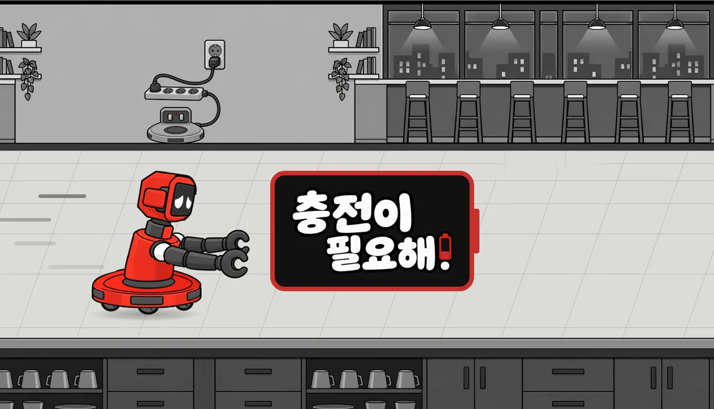
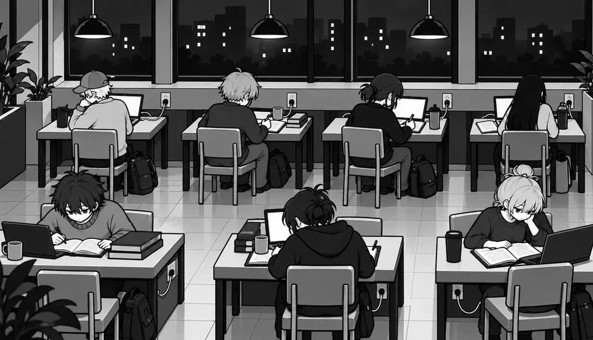
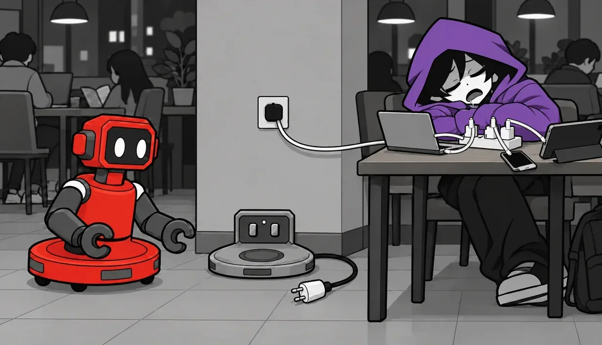
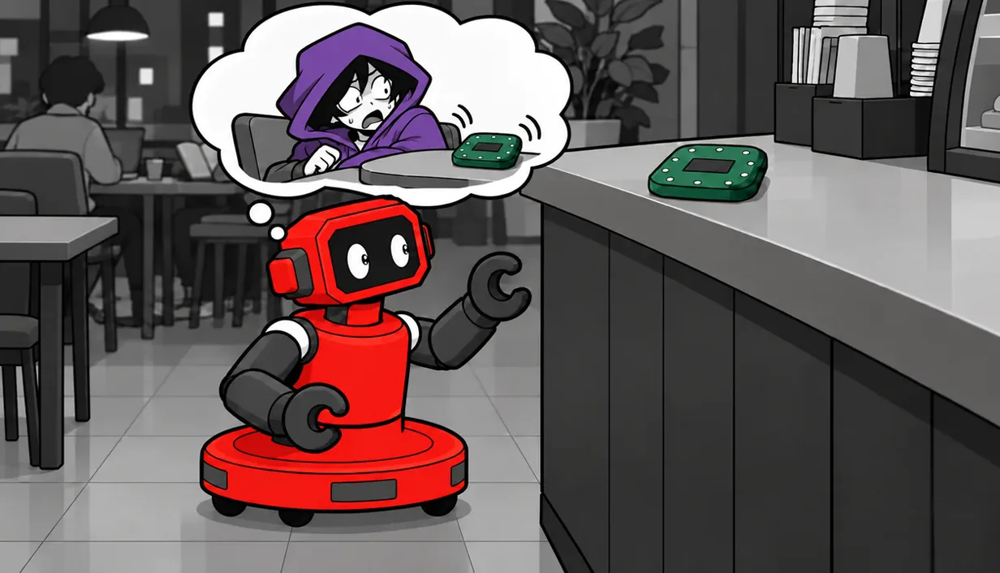

충전이 필요해!
배터리가 떨어져 가는 카페 청소 로봇이, 콘센트를 독차지한 손님을 한 명씩 떠나보내는 짧은 퍼즐 게임입니다.
무료 · 브라우저 · 설치 없음
스마트폰은 지원하지 않습니다. PC에서 플레이해 주세요.
HOW TO PLAY
한 칸씩 걸으며 물건을 밉니다.
방향키나 WASD로 카페 바닥을 한 칸씩 걷고, 의자나 진동벨 같은 물건을 밀어서 콘센트를 차지한 손님이 스스로 플러그를 뽑고 떠나게 만듭니다. 음료를 주문한 손님에게 음료를 밀어 주거나 젖은 바닥을 닦는 일도 길을 여는 방법이 됩니다.
Z로 한 걸음 되돌리고 R로 처음부터 다시 할 수 있으며, 실패해도 벌칙은 없습니다.
SCENES
장면들



DEVLOG
개발 일지
마법 빨대 카페 퍼즐에서 시작해 지금의 게임이 되기까지 남긴 기록입니다. 회색 점은 처음 저장소(magic-straw) 시절입니다.
-
2026년 10월 24일
마법 빨대로 시작한 카페 퍼즐
이 게임은 시리어스 게임 수업의 실습에서 시작했습니다. 누군가 또는 무언가의 권리가 침해당하는 상황을 하나 정하고, 그 상황으로 간단한 게임을 만드는 활동이었습니다.
처음 정한 상황은 시험 전날 카페에서 벼락치기를 하던 주인공이 잠깐 자리를 비운 사이, 옆자리 사람이 주인공의 충전기를 뽑고 콘센트를 차지해 버리는 장면이었습니다. 주인공은 마법 빨대로 마신 음료를 뱉어 주변 물건을 움직이고, 조용히 자리를 되찾아야 했습니다.
Codex가 먼저 만든 시제품은 고쳐 쓰지 않고 새로 만들었습니다. 저는 Baba Is You처럼 적은 규칙을 조합해 푸는 퍼즐을 원했는데, 그 시제품은 장면을 누르면 반응하는 쪽에 가까웠기 때문입니다.
-
2026년 10월 24일
옆에서 보던 판을 위에서
첫 시제품은 테이블을 옆에서 본 격자였습니다. 직접 해 보니 시점과 그림체, 시작하는 흐름이 모두 제가 생각한 것과 달랐습니다.
그래서 위에서 내려다보는 시점으로 바꾸고, 그림을 그리기 전에 회색 상자로 된 목업부터 확인하는 순서로 다시 만들었습니다. 위에서 보면 줄끼리 영향을 주지 않아 퍼즐이 단조로워지는 문제가 생겨서, 날아가는 얼음을 꺾는 삼각 메뉴판도 넣었습니다.
-
2026년 10월 24일
평면 벡터 같은 그림
처음 받은 그림 열일곱 장은 평면 벡터 그림처럼 보여서, 제가 기준으로 삼은 Helltaker와 Hades의 수준에 미치지 못했습니다. 원인은 그림 의뢰서가 단색 면과 그림자 한 단계만 쓰도록 정해 둔 데 있었습니다.
그래서 본 그림 의뢰를 멈추고, 같은 대상 네 가지를 두 그림체로 그려 비교하는 시험부터 다시 했습니다.
-
2026년 10월 24일
세 도구와 나눈 일
이 게임은 혼자 만들지만 도구를 셋 썼습니다. 저는 방향을 정하고 결과를 고르는 일을 맡았고, 규칙과 판은 Claude Code가, 그림은 Codex가 만들었습니다. 음악은 제가 Suno로 만들었습니다.
그림이 게임에 들어가기 전에는 Claude Code가 크기와 자리를 한 번 더 검토하도록 순서를 정했습니다. 나중에는 둘이 각자 맡은 파일만 고치도록 나눠서, 동시에 일해도 서로의 작업을 덮어쓰지 않게 했습니다.
-
2026년 10월 28일
AI가 멋대로 만든 UI 지우기
수업에서 "AI가 멋대로 만든 UI와 텍스트 지우기"라는 과제가 나왔습니다. 알림, 도움말 버튼, 혼잣말 말풍선, 단축키 표시처럼 요청하지 않았는데 화면에 들어간 후보를 스물여섯 개 모았습니다. 그중 제가 직접 정한 기능인 배터리 연출, 숙이기와 카메라, 난이도, 손가락 안내는 남기고 나머지를 지웠습니다.
얼음이 날아갈 길을 미리 보여 주는 점선은 처음 두 판에서만 보이게 줄였습니다. 그림 안에 그려진 말풍선과 이모지는 코드로 지울 수 없어서, 다시 그려 달라고 의뢰했습니다.
-
2026년 10월 28일
왜 하필 카페인가
얼음을 뱉는 행동과 카페라는 장소가 '권리 침해'라는 출발점과 잘 이어지지 않는다는 문제가 남아 있었습니다. 가족 식탁과 물총고기도 후보였지만 권리 침해가 보이지 않았고, 동물 체험 카페는 권리 침해가 뚜렷했지만 저는 판타지 쪽을 골랐습니다.
그래서 빼앗긴 샘을 되찾으려는 물의 정령으로 세계를 옮겼습니다. 얼음, 거품, 안개를 물의 세 상태로 묶었고, 들키면 병에 담겨 잡혀간다는 설정으로 정령이 맞서지 못하는 이유를 만들었습니다. 현실의 근거로는 법적인 인격을 인정받은 뉴질랜드의 황거누이 강을 가져왔습니다.
-
2026년 10월 28일
물리 퍼즐로 처음부터
물의 정령으로 그림까지 바꾸던 중, 얼음이 바닥 칸을 따라 꺾여 나가는 규칙 자체가 어색하다는 생각이 들었습니다. 그래서 물리 법칙에 기반한 퍼즐이라는 것만 남기고 처음부터 다시 생각했습니다.
반동과 충돌은 같은 법칙이니 뉴턴의 법칙을 그대로 쓰기로 했고, 장소도 인물도 없는 회색 상자로 운동량 보존 퍼즐 네 판을 만들었습니다. 그다음에는 가만히 서서 머리만 쓰는 게임보다 Baba Is You처럼 자유롭게 움직이고 시행착오에 벌칙이 없는 게임이 하고 싶어서, 걸어 다니며 물건을 차는 방식으로 바꿔 봤습니다.
이때부터 규칙을 먼저 정하고 판 하나로 재미를 확인한 다음에 장소와 인물을 고르는 순서를 지키기로 했습니다.
-
2026년 10월 28일
와닿지 않으면 되돌린다
운동량 시제품을 직접 해 보니 전혀 와닿지 않았고, 카페 버전보다 나은 점도 찾지 못했습니다. 다음 수업까지 엿새가 남아 있어서, 카페 버전을 다듬어 가져가기로 하고 게임을 되돌렸습니다. 물의 정령과 운동량 시제품은 지우지 않고 기록으로 남겼습니다.
같은 날 게임의 목표를 한 문장으로 정했습니다.
"플레이어는 카페에서 Baba Is You처럼 한 칸씩 자유롭게 움직이고, 시행착오에는 벌칙이 없다. 목표는 옆자리 사람이 스스로 플러그를 뽑게(안 쓰게) 만드는 것이다."
-
2026년 10월 29일
콘센트 빌런 도감
그런데 이 목표로 만든 카페 시제품도 와닿지 않았고, 옆자리 사람을 보조배터리로 달랜다는 설명도 마음에 들지 않았습니다. Helltaker처럼 확실하고 매력적인 콘셉트가 필요했습니다.
Helltaker가 사람을 끄는 방식, 그러니까 한 줄로 끝나는 전제와 판마다 한 명씩 나오는 인물, 좁고 강한 그림체와 음악을 기준으로 콘셉트 세 개를 받아 봤고, 그중 '콘센트 빌런 도감'을 골랐습니다. 판마다 콘센트를 독차지한 손님이 한 명씩 나옵니다.
시점은 한 칸씩 미는 퍼즐에 맞게 바닥 칸이 화면과 나란한 쯔꾸르식으로 정했습니다. 음악은 제가 Suno로 만든 두 곡을 넣었습니다.
-
2026년 10월 29일
새 저장소와 로봇 주인공
여러 방향이 쌓인 magic-straw 저장소는 기록으로 남기고, 콘센트 빌런 도감만 떼어 지금의 저장소로 옮겼습니다. 마법 빨대라는 이름도 더는 게임과 맞지 않았습니다.
공개 주소에서 직접 해 보니 화면이 작고, 판을 깬 뒤 넘어가는 방법이 보이지 않고, 빌런과 콘센트가 무슨 이야기인지 전해지지 않았습니다. 그래서 게임을 챕터와 레벨로 나누고 프롤로그와 빌런 소개, 설정창을 넣었습니다.
같은 날 주인공을 사람에서 로봇으로 바꾸고, 둘째 빌런을 공부하는 모습을 찍어 올리는 스터디 윗 미 촬영자로 정했습니다.
-
2026년 10월 30일
원통 몸통에 팔 두 개
로봇의 생김새는 시험 그림을 여러 차례 받아 비교한 뒤 골랐습니다. 원반 위에 원통 몸통을 얹고 몸통 양옆에 팔을 단 모습입니다. 원반에서 팔이 바로 솟는 모습은 어색해서 팔을 몸통으로 옮겼고, 게임 속 작은 크기에서도 보이게 팔은 몸과 다른 진한 회색으로 칠했습니다.
같은 날 로봇이 돌아가 쉴 충전 독을 게임에 넣고, 제목을 '충전이 필요해!'로 바꿨습니다. 글로 된 프롤로그는 글 없는 만화 다섯 컷으로 바꿨습니다.
-
2026년 10월 31일
카페 옷을 입힌 소코반
게임만의 특색이 없고 상호작용이 의자 밀기뿐이라는 점이 마음에 걸렸습니다. 1장은 의자 밀기, 3장도 쓰레기통이 더해질 뿐이라서 카페 옷을 입힌 소코반에 가까웠습니다.
Hitman GO와 Lara Croft GO는 등장인물마다 단순하고 예측할 수 있는 규칙을 하나씩 주고, Cosmic Express는 승객마다 내릴 곳을 정해 배달 순서를 퍼즐로 만듭니다. 이 게임들을 살펴본 뒤 음료 배달과 물 쏟은 바닥을 골랐습니다. 음료를 주문한 손님 옆까지 밀어 주면 손님이 비켜 주어 막힌 길이 열리고, 젖은 바닥에서 민 물건은 미끄러지며, 청소 로봇이 지나간 자리는 닦입니다.
걸음마다 배터리가 줄어드는 방식도 후보였지만, 시행착오에 벌칙이 없어야 한다는 목표와 부딪혀서 넣지 않았습니다.
-
2026년 10월 31일
손님은 스스로 떠나야 한다
촬영하는 손님의 판에서는 로봇이 하는 일이 카메라에 찍히면 안 됩니다. 로봇이 한 짓이라는 게 찍히면, 그 손님은 로봇만 쫓아내고 자리를 지킬 테니까요. 손님이 스스로 플러그를 뽑고 떠나야 한다는 목표 문장에서 나온 규칙입니다.
손님이 떠나면 로봇이 스스로 굴러가 충전 독에 올라앉도록, 독도 판 밖에서 빌런 자리 옆 바닥 칸으로 옮기기로 했습니다.
-
2026년 11월 1일
배터리 모양 로고
로고는 제 아이디어대로 빨간 테두리를 두른 배터리 모양의 검은 받침 위에 흰 글씨를 얹었습니다. 처음의 빨간 글씨는 회색 배경과의 명암비가 1.4~1.9 대 1이라 잘 읽히지 않았는데, 검은 받침 위 흰 글씨는 21 대 1이 됩니다.
-
2026년 11월 1일
손님 여덟 명
실내 판의 손님을 다섯 명에서 여덟 명으로 늘리면서 성별과 나이를 섞기로 했고, 비율은 Claude Code에게 맡겼습니다. 여자 넷과 남자 넷이고, 20대 넷, 10대 후반 한 명, 30~40대 두 명, 60대 한 명입니다.
앉은 자세마다 남녀가 한 명씩 있고, 손님이 마시는 음료는 다섯 종류를 두 번까지만 씁니다.
-
2026년 11월 4일
수업 플레이테스트, 그리고 멈춤
수업에서 플레이테스트를 했습니다. 이 게임이 첫 순서였고, 다음 순서 때문에 2장 다섯째 판에서 끝났습니다. 게임성에 좋은 평가를 받아서 무척 기뻤고, 개발은 여기서 멈추기로 했습니다.
여유가 생기면 이어서 만들 생각입니다. 그때는 판과 규칙은 그대로 두고, 카메라에 잡히는 노란 칸의 뜻을 그림만으로 읽히게 하는 일부터 보려고 합니다.
magic-straw 저장소에서 2026년 10월 24일에 시작해 10월 29일에 지금 저장소로 옮겼고, 11월 4일 수업 플레이테스트를 끝으로 개발을 멈췄습니다. 그때까지 이 저장소에 커밋이 91개 쌓였습니다.
만든 사람: soomin007. 함께 쓴 도구: Claude Code(규칙과 판), Codex(그림), Suno(음악)
로봇에게 콘센트를 돌려주세요.